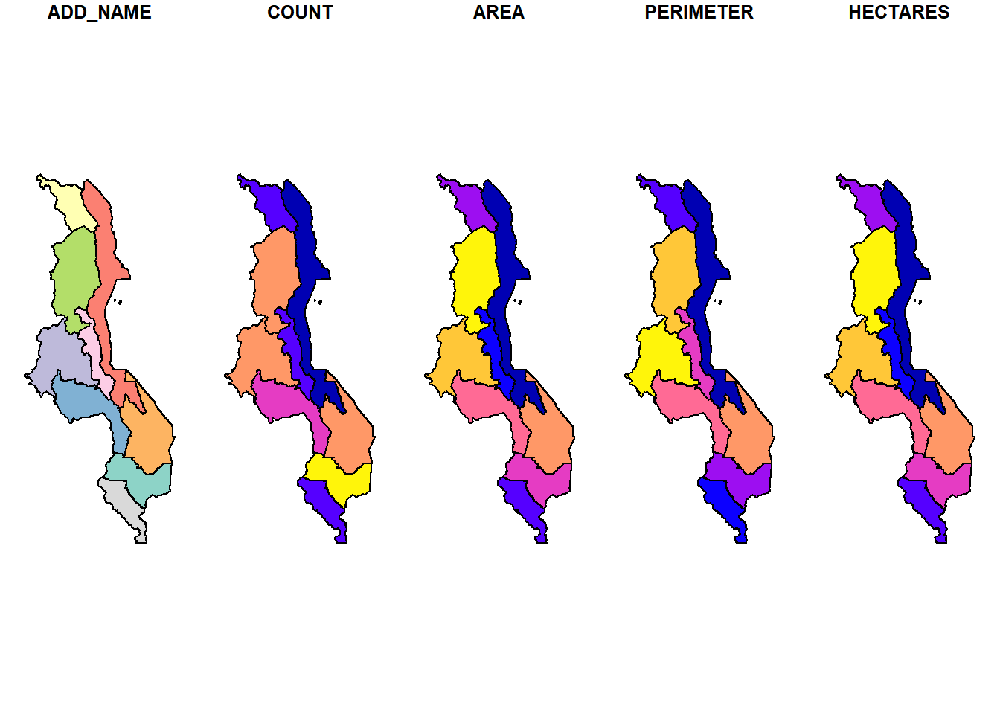
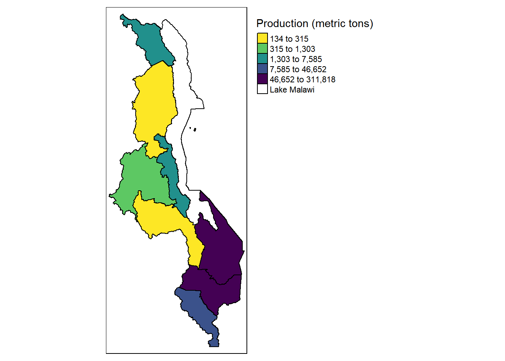
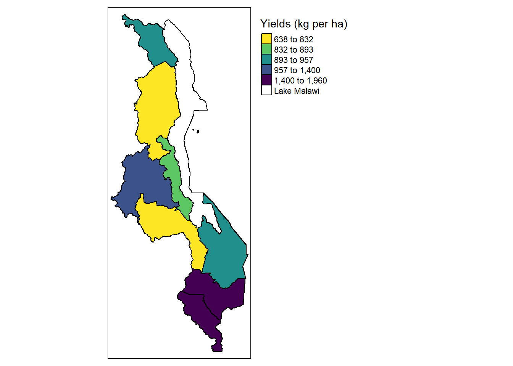

library(sf)Linking to GEOS 3.9.1, GDAL 3.2.1, PROJ 7.2.1; sf_use_s2() is TRUEadd_map=read_sf("Shapefiles/malawi_add_l.shp")
plot(add_map)
pp2019=read.csv("Pigeonpea_2019.csv")
add_pp2019=merge(add_map,pp2019, by="ADD_NAME")
add_pp2019_sp=as_Spatial(add_pp2019)
library(tmap)
tmap_mode("plot")tmap mode set to plottingp1=tm_shape(add_pp2019_sp) +
tm_polygons(col = "Prodn_t",palette = "-viridis", title = "Production (metric tons)", style = "quantile", textNA = "Lake Malawi") +
tm_style("col_blind")+
tm_layout(legend.outside = TRUE,title.size=4)
p1
tmap_save(p1, "ProductionMap.png",height=5,width=5)Map saved to D:\OneDrive\CCRP\AEHubCropLivestock\For publication\Choices\ABM\Outlook on agriculture\Revision\LandUnits\ProductionMap.pngResolution: 1500 by 1500 pixelsSize: 5 by 5 inches (300 dpi)p2=tm_shape(add_pp2019_sp) +
tm_polygons(col = "Yield_kg_ha",palette = "-viridis", title = "Yields (kg per ha)", style = "quantile", textNA = "Lake Malawi") +
tm_style("col_blind")+
tm_layout(legend.outside = TRUE,title.size=4)
p2
tmap_save(p2, "YieldMap.png",height=5,width=5)Map saved to D:\OneDrive\CCRP\AEHubCropLivestock\For publication\Choices\ABM\Outlook on agriculture\Revision\LandUnits\YieldMap.pngResolution: 1500 by 1500 pixelsSize: 5 by 5 inches (300 dpi)p3=tmap_arrange(p1, p2)
p3Some legend labels were too wide. These labels have been resized to 0.59, 0.54, 0.47. Increase legend.width (argument of tm_layout) to make the legend wider and therefore the labels larger.Some legend labels were too wide. These labels have been resized to 0.59. Increase legend.width (argument of tm_layout) to make the legend wider and therefore the labels larger.
tmap_save(p3, "ProductionYieldMaps.png",height=5,width=5)Legend labels were too wide. The labels have been resized to 0.47, 0.40, 0.35, 0.32, 0.28, 0.40. Increase legend.width (argument of tm_layout) to make the legend wider and therefore the labels larger.Legend labels were too wide. The labels have been resized to 0.47, 0.47, 0.47, 0.40, 0.35, 0.40. Increase legend.width (argument of tm_layout) to make the legend wider and therefore the labels larger.Map saved to D:\OneDrive\CCRP\AEHubCropLivestock\For publication\Choices\ABM\Outlook on agriculture\Revision\LandUnits\ProductionYieldMaps.pngResolution: 1500 by 1500 pixelsSize: 5 by 5 inches (300 dpi)